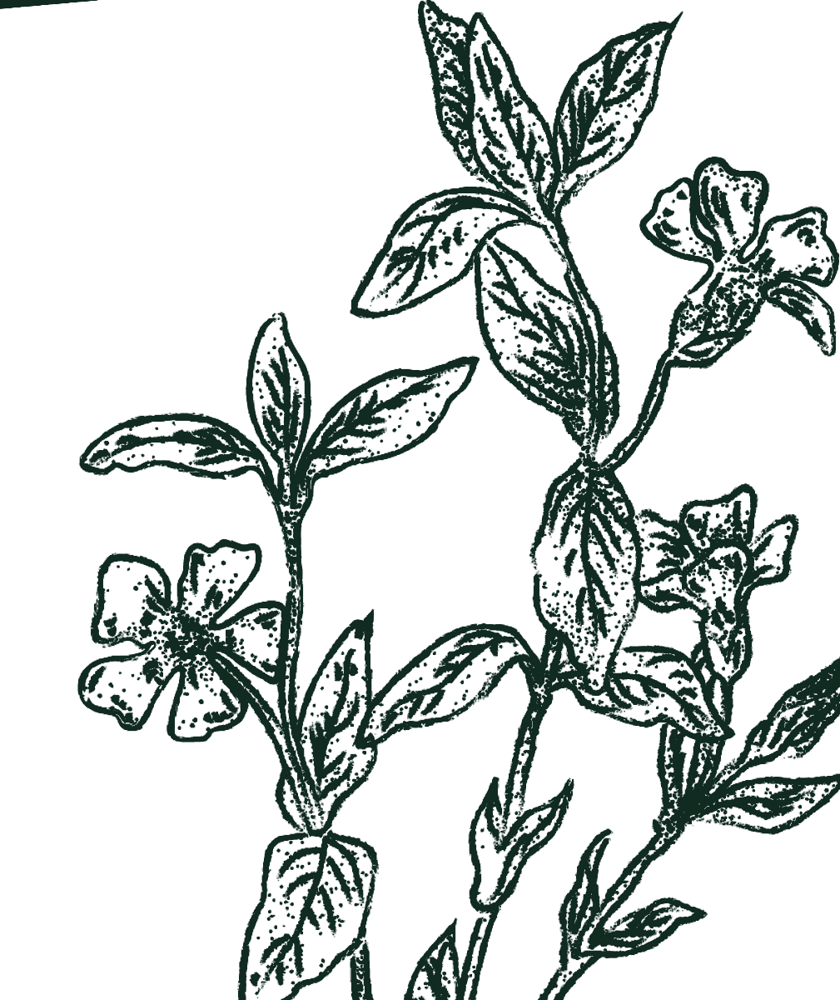
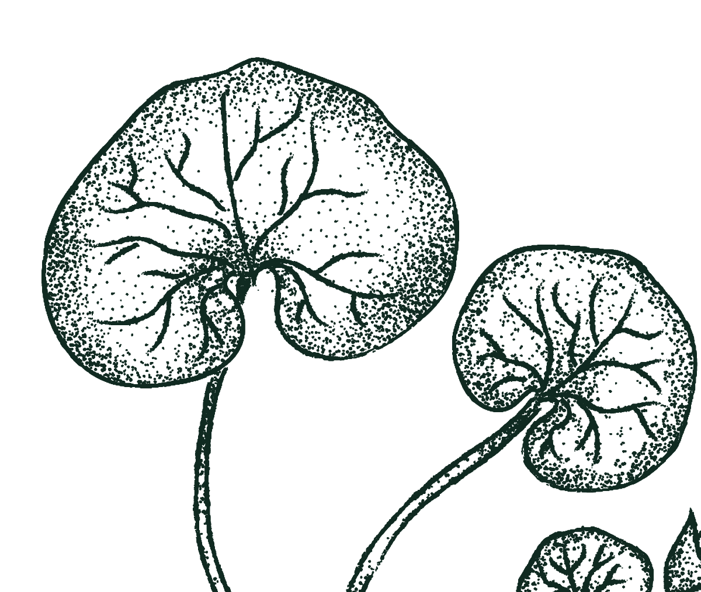
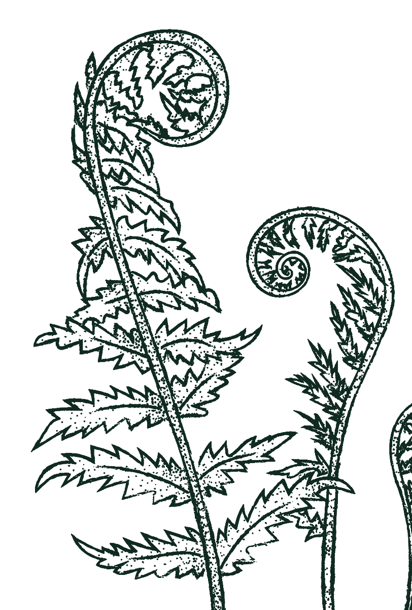
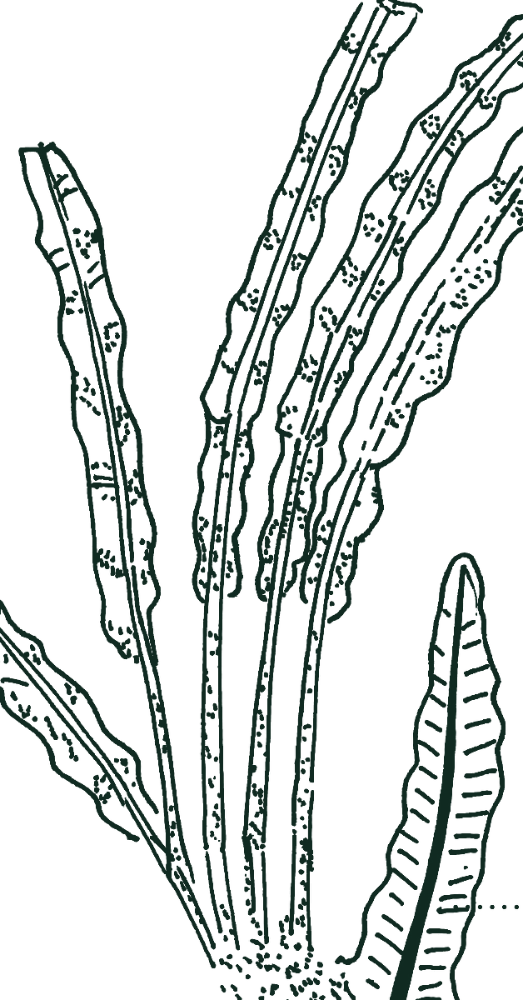
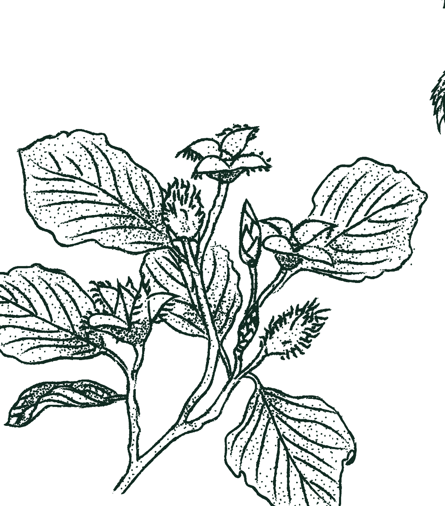
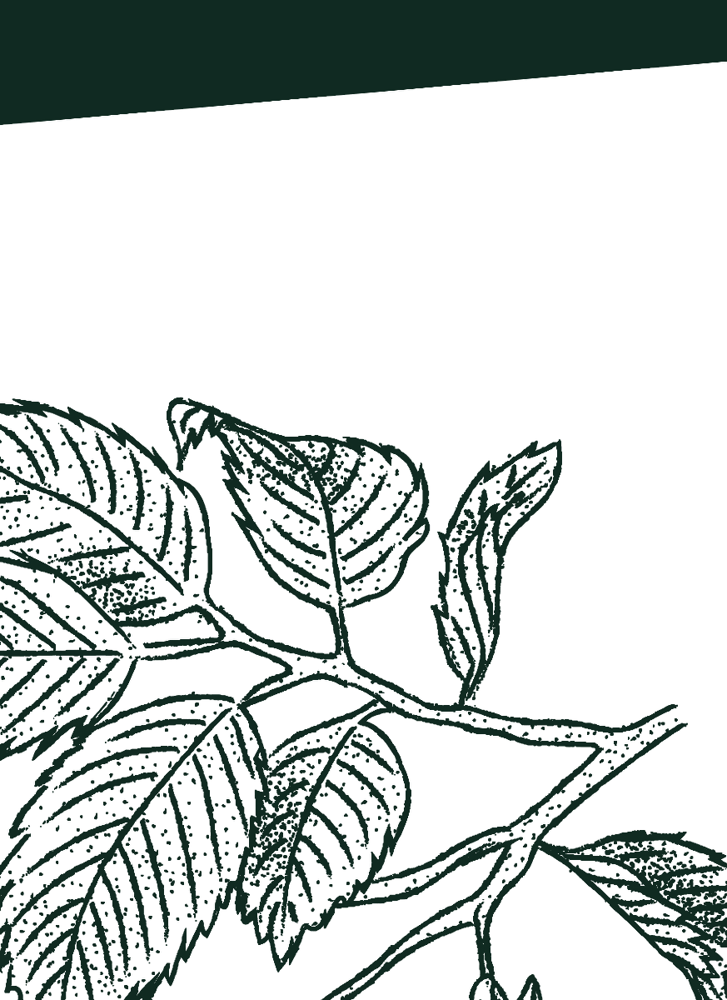
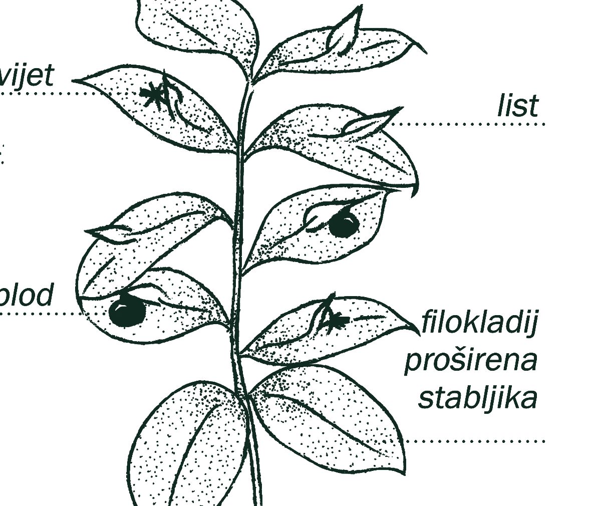
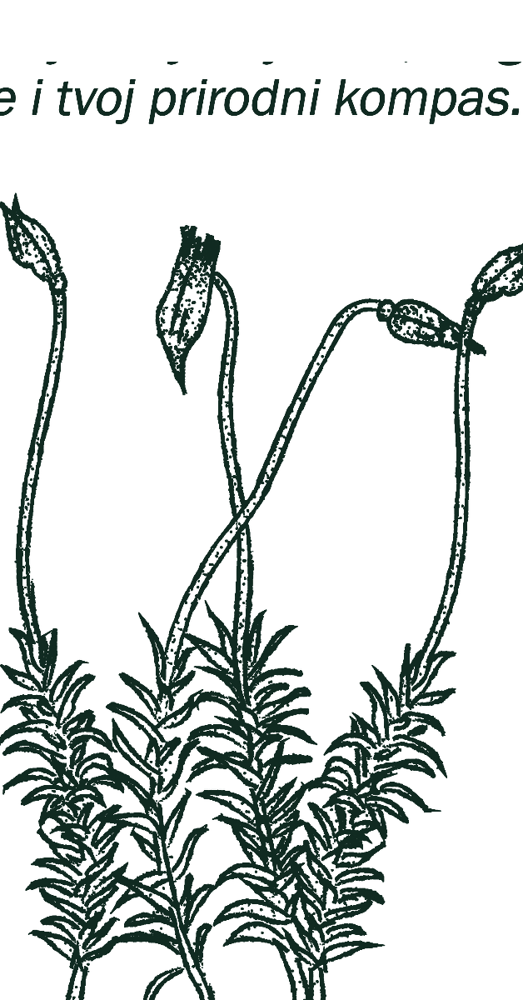
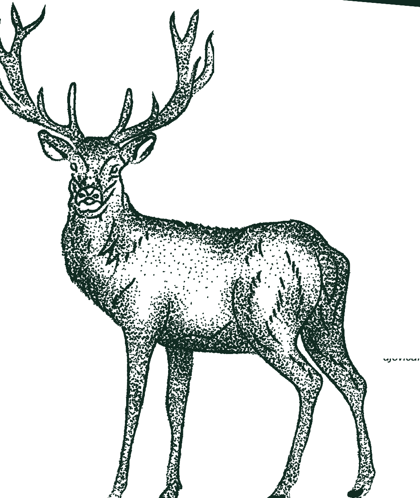

Zimzelen
Vinca minorVazdazelena biljka ljubičastih cvjetova. Brzo prekriva tlo, sprječava isparavanje vode, a korijenjem povezuje tlo na strmim obroncima i smanjuje eroziju.
02 · Bioraznolikost
Moslavačka šuma nije samo mnoštvo stabala. To je složena zgrada s tri kata: prizemljem mahovina i proljetnica, prvim katom grmlja i drugim katom krošanja. Svaki kat ima svoje stanovnike — i svoju ulogu.
Interaktivno
Odaberi kat šume i pogledaj tko u njemu živi. Na stazi Crkveni jarak svakom je sloju posvećena zasebna poučna točka.
Najniži kat · do 50 cm
Ovdje se skrivaju proljetnice, mahovine i paprati. Zakonom su zaštićene šumska ciklama, sitnocvjetni kukurijek, bijela šumarica, visibaba i šafran. Ispod lišća žive stonoge, kopneni rak babura, puževi, mravi i pauci.
Gljive su važni razlagači: vrganj, lisičarka, trubica, sunčanica, prosenjak, bukovača, panjevčica, puranov rep, muhara i pupavka.
Flora
Na gori je utvrđeno 242 biljne vrste, od kojih je 55 zaštićeno. Dvije vrste nalaze se u Crvenoj knjizi vaskularne flore Hrvatske.

Vazdazelena biljka ljubičastih cvjetova. Brzo prekriva tlo, sprječava isparavanje vode, a korijenjem povezuje tlo na strmim obroncima i smanjuje eroziju.

Niska vazdazelena trajnica s cvjetovima skrivenim među listovima. Otrovna je i zaštićena — promatraj je, ali ne beri.

Jedna od najstarijih biljaka, rasla je još u doba dinosaura. Razmnožava se sporama i nema cvijet — unatoč legendi da cvijet paprati donosi sreću.

Paprat s jezičastim listovima i sorusima na donjoj strani. Sorusi su nakupine spora — zato paprati nikada ne cvjetaju.

Glatka, tanka, siva kora. List valovitog i dlakavog ruba, plod bukvica. U našim krajevima vjerovalo se da se u bukovim grančicama rađaju vile.

Kora je ispucanija od bukve, list oštro nazubljen, plod oraščić s krilcima. Jednodomna je biljka, a drvo se koristi za alate i glazbala.

Zaštićeni niski vazdazeleni grm. Ono što izgleda kao list zapravo je proširena stabljika — filokladij. Na gori raste i bodljikava veprina.

Raste na vlažnijoj i hladnijoj strani debla — sjevernoj. Zato je nazivaju prirodnim kompasom. Zadržava vlagu i štiti tlo.
Valovit rub lista, kratka peteljka, žir na dugoj stapci. Motiv lužnjaka nalazi se na kovanici od 5 lipa. Kitnjak ima obrnut odnos — dugu peteljku i kratku stapku.
Fauna
U sloju grmlja i na šumskom tlu žive jelen, srna, muflon, lisica, divlja mačka, divlja svinja, zec, jazavac, lasica, jež, vjeverica i kuna. Brojni su i glodavci, pauci te jelenak — jedan od najvećih kukaca.
Kuna je nekada bila toliko važna da se porez plaćao njezinim krznom. Otuda simbol novca i ime hrvatske valute. Danas su na gori česte kuna bjelica i kuna zlatica.

Lucanus cervus — jedan od najvećih kukaca. Ženka polaže jajašca u panjeve, ličinke se hrane trulim drvom, a razvoj traje oko pet godina. Mužjaci se bore čeljustima nalik na jelenje rogove.
Dryocopus martius — gnijezdi se u dupljama starih hrastova, hrani se mravima i potkornjacima. Njezine duplje koriste i druge životinje, pa je važna za cijeli ekosustav.
Ciconia nigra — strogo zaštićena ptica mirnih, starih šuma s potocima i vlažnim livadama. Gnijezdi se na visokom starom drveću, daleko od ljudi.
Zaštita
Regionalni park Moslavačka gora proglašen je 2011. zbog krajobrazne, biološke i geološke raznolikosti. Od 155 životinjskih vrsta zaštićeno je 84, a ornitofauna broji 64 vrste, među kojima 18 ugroženih.
Posjetitelji su dio ekosustava. Staze se ne napuštaju, biljke se ne beru, a smeće nosi sa sobom. Šuma ne treba našu galantnost — treba našu pažnju.
Brojke
Igre
Izvori: infopaneli poučne staze Crkveni jarak; Vrsaljko, Santrić i Bunja, „Krajobrazna i biološka raznolikost…“ (Agronomski glasnik, 2019). Puni popis na stranici Izvori.